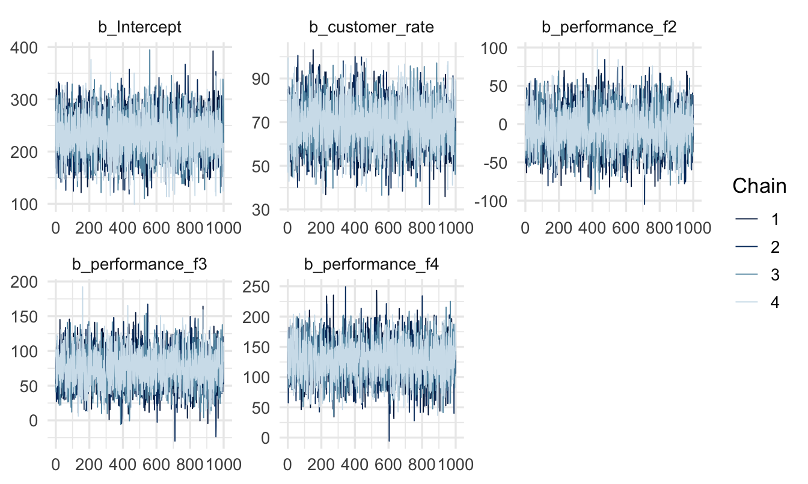
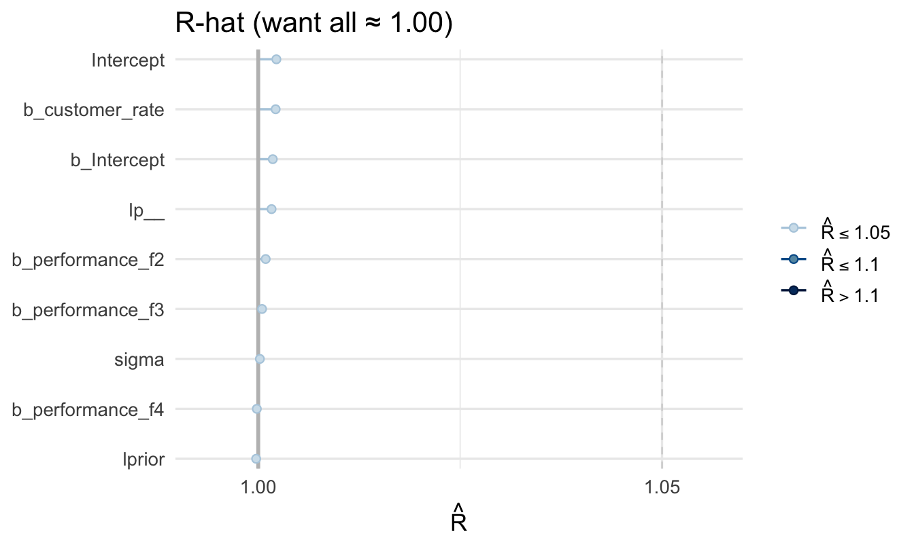
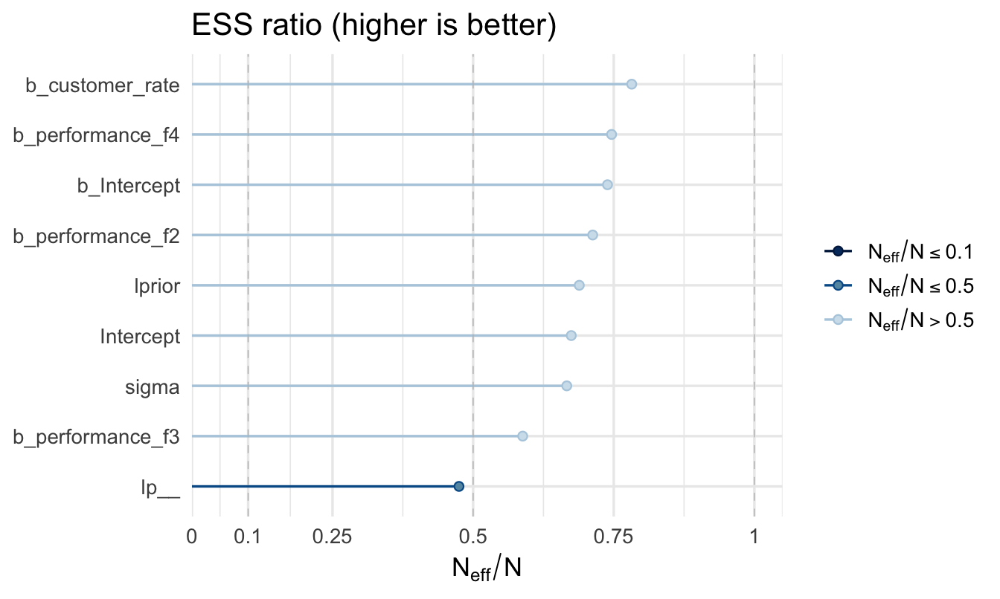
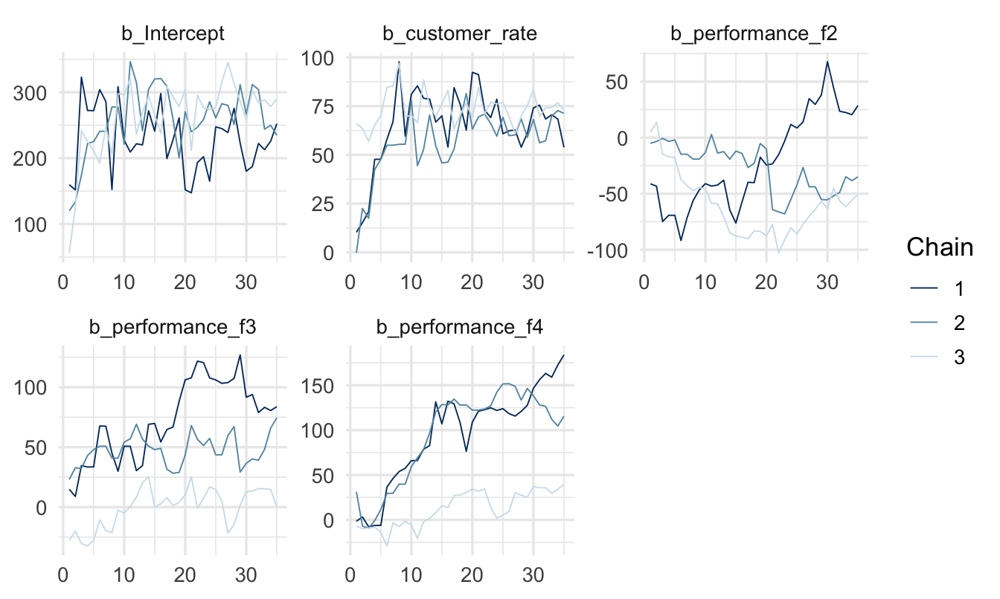
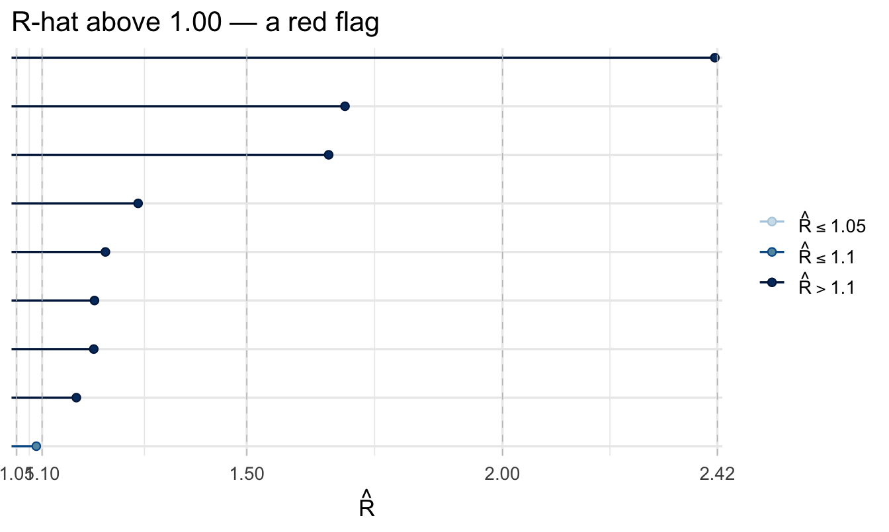
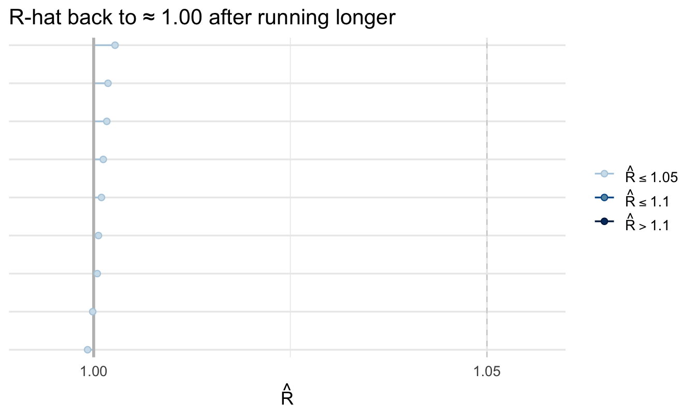

library(tidyverse)
library(peopleanalyticsdata)
library(brms)
library(bayesplot)
library(tidybayes)
theme_set(theme_minimal(base_size = 13))
set.seed(2026)
data("salespeople", package = "peopleanalyticsdata")
# Chapter 1 found a single missing value in each of `sales`,
# `customer_rate` and `performance`; dropping those rows here keeps
# the rest of this chapter's code simple.
salespeople <- salespeople |>
drop_na(sales, customer_rate, performance, promoted) |>
mutate(performance_f = factor(performance))11 Inside the Sampler: MCMC & Trustworthy Models
Optional deep-dive
Everything so far assumed the model “just worked.” Usually it does. This chapter explains how it works, and — more practically — how to tell when it hasn’t.
Important
But a sceptical stakeholder — or your own good judgment — may ask: “how do you know your model converged?” If you can’t answer that, you can’t defend any of your results.
This chapter shows you how to check — and what a broken fit looks like so you’ll recognise one.
What you’ll be able to do by the end
- Explain in plain terms what MCMC does
- Read trace plots, R̂ (Rhat) and effective sample size (ESS)
- Recognise a badly-behaved fit and fix it
11.1 Setup
11.2 What is MCMC, really?
11.2.1 The problem
In Chapter 4 we computed a posterior two ways: a grid, and the Beta-Binomial shortcut.
Note
Both only work for the simplest models. Add a few predictors and there is no formula and no grid fine enough — the space is too big.
11.2.2 The solution: explore it
Instead of solving for the posterior, brms (via Stan) walks around it. Imagine the posterior as a landscape: every possible combination of parameter values is a location, and the height at that location is how plausible that combination is, given your data and priors. You cannot see the landscape — it has too many dimensions to draw and no formula to evaluate — but you can stand somewhere on it and feel how high you are.
So you walk. The whole algorithm, written out as if you were doing it on foot in fog:
stand somewhere — anywhere
repeat, thousands of times:
pick a nearby spot at random
measure how high it is compared with where you are now
if the new spot is higher:
move there
if the new spot is lower:
move there anyway — but only sometimes,
with a chance equal to how much lower it is
(a little lower: usually move; far lower: rarely move)
write down where you are standingAt the end you have a long list of locations. That list is the answer.
11.2.3 Why it agrees to walk downhill
The step that looks like a mistake is the one that makes the whole thing work, and it is worth slowing down on.
Suppose the rule were simply “move if it’s higher, otherwise stay”. The walk would climb the nearest hill, arrive at the top, and stop — because every direction from a summit is down. You would learn where one peak is and nothing else. Worse, if the landscape has several peaks, you would find whichever one happened to be nearest your starting point and never discover the others. That trap has a name you may know from optimisation: a local maximum.
Sometimes accepting a downhill step is what lets the walker leave a peak, cross a valley, and find out what else is out there. It is deliberate, controlled randomness — noise added on purpose, as insurance against confidently exploring only one small region.
Important
The downhill rule does something else, and it is the real reason for it. Because the walker moves to lower ground in proportion to how much lower it is, it ends up spending time in each region in proportion to how plausible that region is.
That is the whole trick. It means you can simply count how often the walk visited each area, and those counts reproduce the posterior — no formula required.
11.2.4 What Stan actually does
The version above is the Metropolis algorithm, from 1953, and it is the honest core of the idea. Stan uses a considerably smarter descendant called Hamiltonian Monte Carlo — the “much smarter way of wandering” mentioned in Chapter 5 — which uses the slope of the landscape to propose steps that are long, well-aimed and rarely wasted, instead of guessing at random and often being rejected.
The improvement is in how the next spot is chosen. The accept-or-reject logic, and the reason for it, are exactly as above. Everything in the rest of this chapter applies to both.
11.2.5 The draws are the answer
The collection of places the walk visits — the draws — is our approximation of the posterior. Every posterior plot and credible interval you’ve made so far was computed from those draws.
Important
So if the walk went badly, everything downstream is wrong — quietly, and without an error message.
TipFor the ML/DS crowd
If you’ve trained models with gradient descent, MCMC will look superficially similar — both are iterative — but they’re solving different problems. Gradient descent hunts for a single best point (the minimum of a loss function, equivalent to the posterior’s mode). MCMC instead tries to visit every plausible region in proportion to how plausible it is, so that the full spread of the draws describes the whole posterior, not just its peak. That’s why a converged MCMC chain gives you a credible interval for free, where a converged gradient descent run gives you one number and no direct measure of uncertainty.
11.2.6 Two things must go right
- Convergence — several independent walks (chains) must end up exploring the same region.
- Enough exploration — the walk must move around freely, giving us plenty of effectively-independent draws.
Three diagnostics check exactly this.
11.3 A healthy model
# Same priors as Chapter 7 - already visualised there. This chapter's
# focus is the sampler's behaviour, not the prior, so we reuse them as-is.
fit_good <- brm(
sales ~ customer_rate + performance_f, data = salespeople, family = gaussian(),
prior = c(prior(normal(400, 200), class = Intercept),
prior(normal(0, 200), class = b),
prior(exponential(0.005), class = sigma)),
chains = 4, iter = 2000, seed = 10, refresh = 0
)11.3.1 Diagnostic 1 — the trace plot
mcmc_trace(fit_good, regex_pars = "b_")
NoteLook for the fuzzy caterpillar
Healthy chains: overlap each other completely, look flat and stationary — no drift or trend, and are dense and fuzzy, not slow smooth waves. If one chain wanders off alone, or they drift upward together, the sampler hasn’t settled.
11.3.2 Diagnostic 2 — R̂ (R-hat)
Convergence is not a property of the model as a whole. It is checked one parameter at a time, so the plot has one point per parameter — every coefficient, plus sigma, plus a couple of internal quantities Stan tracks (lprior and lp__). A model can settle down nicely for most of its parameters and still be unreliable for one, which is precisely what you are looking for here.
bayesplot hides the parameter names by default, on the grounds that with a large model there would be too many to read. Ours is small, so we switch them back on:
mcmc_rhat(brms::rhat(fit_good)) +
1 yaxis_text(hjust = 1) +
labs(title = "R-hat (want all ≈ 1.00)")- 1
- Turns the parameter labels back on and right-aligns them. Drop this line on a model with fifty parameters, where the pattern matters more than any individual name.

TipA package-naming trap worth knowing about
Both brms and bayesplot export a function called rhat() (and another called neff_ratio()) — whichever package you loaded more recently wins when you call the bare function name, and the other package’s version usually can’t make sense of a brmsfit object. Writing brms::rhat(fit) explicitly, as above, sidesteps the ambiguity entirely rather than hoping your library() calls are in the right order. This kind of name collision is common enough across the R ecosystem that reaching for package::function() whenever two loaded packages might share a name is a good habit generally, not just here.
Important
A simple rule: anything above 1.01 deserves attention.
11.3.3 Diagnostic 3 — effective sample size
mcmc_neff(brms::neff_ratio(fit_good)) +
yaxis_text(hjust = 1) +
labs(title = "ESS ratio (higher is better)")
Note
ESS tells you how many genuinely independent draws your sample is worth. You want it in the hundreds or thousands.
All three diagnostics look healthy — we can trust fit_good.
11.4 A broken model (on purpose)
fit_bad <- brm(
sales ~ customer_rate + performance_f, data = salespeople, family = gaussian(),
prior = c(prior(normal(400, 200), class = Intercept),
prior(normal(0, 200), class = b),
prior(exponential(0.005), class = sigma)),
chains = 3, iter = 60, warmup = 25, seed = 10, refresh = 0
)Warning: There were 94 transitions after warmup that exceeded the maximum treedepth. Increase max_treedepth above 10. See
https://mc-stan.org/misc/warnings.html#maximum-treedepth-exceededWarning: There were 3 chains where the estimated Bayesian Fraction of Missing Information was low. See
https://mc-stan.org/misc/warnings.html#bfmi-lowWarning: Examine the pairs() plot to diagnose sampling problemsWarning: The largest R-hat is 2.4, indicating chains have not mixed.
Running the chains for more iterations may help. See
https://mc-stan.org/misc/warnings.html#r-hatWarning: Bulk Effective Samples Size (ESS) is too low, indicating posterior means and medians may be unreliable.
Running the chains for more iterations may help. See
https://mc-stan.org/misc/warnings.html#bulk-essWarning: Tail Effective Samples Size (ESS) is too low, indicating posterior variances and tail quantiles may be unreliable.
Running the chains for more iterations may help. See
https://mc-stan.org/misc/warnings.html#tail-essmcmc_trace(fit_bad, regex_pars = "b_")
mcmc_rhat(brms::rhat(fit_bad)) + labs(title = "R-hat above 1.00 — a red flag")
11.4.1 The danger
summary(fit_bad)$fixed[, c("Estimate", "Rhat", "Bulk_ESS")] Estimate Rhat Bulk_ESS
Intercept 249.79939 1.088637 22.661425
customer_rate 65.18596 1.200987 14.338840
performance_f2 -36.01764 1.660197 6.452094
performance_f3 39.87765 2.415102 5.105122
performance_f4 67.64568 1.692095 6.288129
Important
Notice: the model still printed estimates. Nothing crashed. If you hadn’t checked the diagnostics, you’d have reported these numbers — and they’re unreliable.
11.5 Fixing convergence problems
- Run longer — more
iter(with adequatewarmup). Fixes most cases. - Better priors — vague priors on awkward scales make the posterior hard to explore; weakly-informative priors help.
- Standardise predictors — puts everything on a comparable scale.
- Handle divergences — if
brmswarns about “divergent transitions,” raisecontrol = list(adapt_delta = 0.95)(or higher), or reparameterise.
fit_fixed <- update(fit_bad, iter = 2000, warmup = 1000, refresh = 0)
mcmc_rhat(brms::rhat(fit_fixed)) +
labs(title = "R-hat back to ≈ 1.00 after running longer")
Nothing about the model changed — only how long we let it explore.
Your turn
Fit a model with chains = 2, iter = 40, warmup = 15 and inspect its trace plot and R̂. Then fix it by running longer and confirm R̂ returns to 1.00.
# Your code hereOn the job
ImportantA paragraph that signals competence
“All R̂ values were 1.00, effective sample sizes were in the thousands, and trace plots showed good mixing across four chains.”
One sentence in a methods appendix, and an obvious question from a technical reviewer is answered before they ask it.
Summary
NoteToday you learned
- MCMC approximates the posterior by exploring it; the draws are the answer — a different job from what gradient descent does.
- Trace plots should look like overlapping fuzzy caterpillars.
- R̂ ≈ 1.00 and healthy ESS signal a trustworthy fit.
- A broken fit still prints numbers — always check.
- Most problems are fixed by running longer or better priors.
Next chapter
Richer models — varying slopes and count outcomes, for when your own work needs more than the core toolkit.